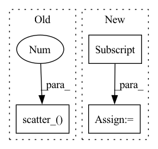

Pattern ID :6944

Before Change
confidence = 1 - self.label_smoothing
smooth_target = torch.zeros_like(pred).to(self.device)
smooth_target.fill_(self.label_smoothing / (self.num_classes - 1))
smooth_target.scatter_(1, target.data.unsqueeze(1), confidence)
return smooth_target
def get_criterion(
After Change
target *= 1 - self.label_smoothing
smooth_target = torch.ones_like(target).to(self.device)
smooth_target *= self.label_smoothing / (self.num_classes - nonzero_cnt)
smooth_target[nonzero_idxs] = target[nonzero_idxs]
return smooth_target
def get_criterion(
In pattern: SUPERPATTERN
Frequency: 3
Non-data size: 3
Instances
Fragment ID: 23279607
Project Name: j-marple-dev/model_compression
Commit Name: e26c887b77435b7eb063b2a43b3a92f0ddf45d58
Time: 2020-07-19
Author: jwpark@jmarple.ai
File Name: src/criterions.py
M Class Name: CrossEntropy
N Class Name: CrossEntropy
M Method Name: add_label_smoothing(2)
N Method Name: add_label_smoothing(3)
M Parent Class: Criterion
N Parent Class: Criterion
M File Name: src/criterions.py
N File Name: src/criterions.py
M Start Line: 195
M End Line: 202
N Start Line: 196
N End Line: 202
'>
Before Change
out, l1 = self.model(inputs, last=True)
data = F.softmax(out, dim=1)
outputs = torch.zeros(len(inputs), self.num_classes).to(self.device)
outputs.scatter_(1, targets.view(-1, 1), 1)
l0_grads = data - outputs
if self.linear_layer:
l0_expand = torch.repeat_interleave(l0_grads, embDim, dim=1)
l1_grads = l0_expand * l1.repeat(1, self.num_classes)
After Change
self.N += inputs.size()[0]
out, l1 = self.model(inputs, freeze=True, last=True)
loss = self.loss(out, targets).sum()
l0_grads = torch.autograd.grad(loss, out)[0]
if self.linear_layer:
l0_expand = torch.repeat_interleave(l0_grads, embDim, dim=1)
l1_grads = l0_expand * l1.repeat(1, self.num_classes)
if self.selection_type == "PerBatch":
'>
Fragment ID: 23279606
Project Name: decile-team/cords
Commit Name: 2189639f83d20e85248f3427353c72a2c99971d1
Time: 2021-03-11
Author: krishnatejakillamsetty@gmail.com
File Name: cords/selectionstrategies/supervisedlearning/craigstrategy.py
M Class Name: CRAIGStrategy
N Class Name: CRAIGStrategy
M Method Name: compute_score(3)
N Method Name: compute_score(3)
M Parent Class: DataSelectionStrategy
N Parent Class: DataSelectionStrategy
M File Name: cords/selectionstrategies/supervisedlearning/craigstrategy.py
N File Name: cords/selectionstrategies/supervisedlearning/craigstrategy.py
M Start Line: 140
M End Line: 145
N Start Line: 135
N End Line: 137
'>
Before Change
)
if cfg["USE_AMP"] == True and cfg["OPT_LEVEL"] == "O1":
final_target_logit = final_target_logit.half()
cos_theta.scatter_(1, label.view(-1, 1).long(), final_target_logit)
output = cos_theta * self.s
return output
After Change
index.scatter_(1, label.data.view(-1, 1), 1)
index = index.byte().bool()
output = cos_theta * 1.0
output[index] = cos_theta_m[index]
output *= self.s
return output
'>
Fragment ID: 23279610
Project Name: cavalleria/cavaface
Commit Name: 98a21048f5dce435a6639a288dafc4c6be61be05
Time: 2021-08-25
Author: 605370459@qq.com
File Name: head/metrics.py
M Class Name: ArcFace
N Class Name: ArcFace
M Method Name: forward(3)
N Method Name: forward(3)
M Parent Class: nn.Module
N Parent Class: nn.Module
M File Name: head/metrics.py
N File Name: head/metrics.py
M Start Line: 81
M End Line: 103
N Start Line: 67
N End Line: 86